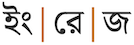
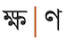

This page brings together basic information about the Bengali script and its use for the Bangla language. It aims to provide a brief, descriptive summary of the modern, printed orthography and typographic features, and to advise how to write Bengali using Unicode.
Select part of this sample text to show a list of characters, with links to more details.
Change size: 28px
ধারা ১ সমস্ত মানুষ স্বাধীনভাবে সমান মর্যাদা এবং অধিকার নিয়ে জন্মগ্রহণ করে। তাঁদের বিবেক এবং বুদ্ধি আছে; সুতরাং সকলেরই একে অপরের প্রতি ভ্রাতৃত্বসুলভ মনোভাব নিয়ে আচরণ করা উচিত।
ধারা ২ এ ঘোষণায় উল্লেখিত স্বাধীনতা এবং অধিকারসমূহে গোত্র, ধর্ম, বর্ণ, শিক্ষা, ভাষা, রাজনৈতিক বা অন্যবিধ মতামত, জাতীয় বা সামাজিক উত্পত্তি, জন্ম, সম্পত্তি বা অন্য কোন মর্যাদা নির্বিশেষে প্রত্যেকেরই সমান অধিকার থাকবে। কোন দেশ বা ভূখণ্ডের রাজনৈতিক, সীমানাগত বা আন্তর্জাতিক মর্যাদার ভিত্তিতে তার কোন অধিবাসীর প্রতি কোনরূপ বৈষম্য করা হবেনা; সে দেশ বা ভূখণ্ড স্বাধীনই হোক, হোক অছিভূক্ত, অস্বায়ত্বশাসিত কিংবা সার্বভৌমত্বের অন্য কোন সীমাবদ্ধতায় বিরাজমান।
The Bengali or Bangla script is used by over 180 million people in Bangladesh and India to write the Bengali language, and a number of other Indian languages including Sylheti, Meithei, Bishnupriya Manipuri, and, with one or two modifications, Assamese. It has historically been used to write Sanskrit within Bengal. It ranks 5th in the world for writing system usage.
The Bengali script is an abugida. Consonants carry an inherent vowel which can be modified by appending vowel signs to the consonant. See the table to the right for a brief overview of features for Bangla.
The orthographic letters of the Bengali script are derived from Sanskrit, and in some cases don't quite fit the needs of modern Bangla (eg. lack of simple vowels for the sounds ɛ and æ, letters for only 2 of many diphthongs, long and short letters where pronunciation no longer distinguishes those sounds, etc.)
The 33 consonant letters used for Bangla are supplemented by repertoire extensions for 3 more sounds by applying the nukta diacritic to characters.
Consonant clusters at any location are normally indicated using a virama (hasant) between consonants. This results in a large number of conjunct forms expressed using stacked consonants, conjoined consonants, and ligated glyphs. Conjuncts often have different pronunciations than might be expected from the letters involved, and in particular gemination is very common. Occasionally, a visible virama is used. However, clusters are often not marked at all.
As part of a cluster, RA has special forms, for both cluster-initial and post-base positions.
Word-final consonant sounds may be represented by a special letter, ৎ, or by 2 dedicated combining marks (anusvara & visarga), but are generally ordinary consonants that are not marked by a virama.
Vowel harmony plays a significant role in the pronunciation of vowel-related code points.
There are 3 pre-base and 2 circumgraph vowel signs. In principle, there are no multipart vowels, however in decomposed text the 2 circumgraphs split into 2 parts each.
Standalone vowels are written using 10 independent vowel letters, one for each vowel sound, including the inherent vowel and 2 diphthongs. The final sound of numerous diphthongs is also represented using independent vowels.
Vowels may be nasalised, using the candrabindu diacritic.
Click on the sound groups to see where else in the document each of the sounds are referred to.
Phones in a lighter colour are non-native or allophones. Source Wikipedia.
Vowel sounds
Plain vowels
Complex vowels
There are a large number of diphthongs in Bangla, and the chart below shows an incomplete set.wp
Vowel harmony
The pronunciation of a vowel can be affected by the vowel in the following syllable. Radice provides the following table, though this is a simplification and there are many exceptions.
Followed by i or u
Followed by ɔ, o, e or a
o → u
o → ɔ
ɔ → o
u → o
e → i
e → æ
æ → e
i → e
For example, the verb শোনাʃonɑto hear with an i ending becomes ʃuni, দেখাdækʰato see becomes dekʰi, etc. This sometimes accounts for the pronunciation of the inherent vowel, eg. অতিথিotitʰiguest and অনুবাদonubadtranslation start with o rather than ɔ.
Consonant sounds
labial
dental
alveolar
post-
alveolar
retroflex
palatal
velar
glottal
stops
pb
td
ʈɖ
kɡ
aspirated
pʰpfbʰ
tʰdʰ
ʈʰɖʰ
kʰɡʰ
affricates
t͡ʃd͡ʒ
aspirated
t͡ʃʰd͡ʒʰ
fricatives
f
sz
ʃ
ɦh
nasals
m
n
ŋ
approximants
w
l
j
trills/flaps
rɾ
ɽ
aspirated
ɽʰ
pf, pʰ and f are alternative pronunciations for the same phoneme, depending on where the speaker is from, and all are written using 09AB
True retroflex (murdhonno) consonants are not found in Bengali. They are apical postalveolar in Western Dialects. In other dialects, they are fronted to apical alveolar.wp
r occurs word-initially, whereas ɾ occurs medially and finally. Both sounds are written using 09B0.wp
s and ʃ are often merged. z is found mainly in foreign words.wp
In the Bangla spoken in Dhaka, ɾ and ɽ are often indistinct phonemically,wp eg. the following two words can be homophonous: করাকড়া
j and w are pronunciations of 09AF 09BC when it appears between certain vowels.
Structure
The effective unit of the Bengali writing systems is the orthographic syllable.
An orthographic syllable can be defined in one of the code point sequences described below. Lowercase letters represent combining characters. Some vowel signs may be displayed at the start of the sequence, although the code points representing them always appear after the base consonant
Consonant-based orthographic syllables
[C[n]h] [C[n]h] C[n] [h | v (n)] [f]
Legend
C
Consonant.
Cn
Consonant followed by nukta.
h
Hasant.
v
Vowel sign.
n
Nasalisation diacritic (candrabindu).
f
Final consonant (one of khanda ta, anusvara, or visarga).
The core of a consonant-based syllable is a base consonant character, which may or may not additionally represent an inherent vowel if it stands alone.
There is no inherent vowel if it is followed by a vowel sign, eg. কীkīকিkiকোko or hasant, eg. ক্k͓ At the end of a word, there may or may not be an inherent vowel, even if there is no hasant.
Any base consonant may be a combination of consonant code point plus nukta.
The base consonant can be preceded by up to two consonant+hasant pairs (where the consonant may also be a combination of consonant+nukta), but only if those consonants form conjuncts (ie. the hasant is invisible), eg. ক্কk͓kম্পm͓pক্ষk͓ʃ̇ন্ত্রn͓t͓r If the preceding consonants carry visible hasant symbols, those are treated as separate orthographic syllables.
Likewise, the variable use of the hasant in Bengali means that a phonetic cluster of consonants can constitute a larger series of orthographic syllables. For example, this word for cymbal has two phonetic syllables, but 3 orthographic since the rt combination is not combined:
করতাল
A vowel sign may optionally be followed by a nasalisation diacritic.
Unless the base consonant is followed by a hasant, the syllable may be terminated by a final consonant repesented by khanda ta, anusvara, or visarga.
Conjunct positions. Native Bengali words do not allow initial consonant clusters, and word-final clusters are rare. However, words borrowed from Sanskrit, English, etc. have introduced many such features.
Many Bengali speakers, however, retain the native phonology, even when using Sanskrit or English borrowings, such as গেরামgerɑm (CV.CVC) for গ্রামg͓rɑmvillage (CCVC), or ইস্কুলịʃ͓̈kul (VC.CVC) forস্কুলʃ͓̈kulschool.wp,#Consonant_clusters
Most word-final clusters were introduced from English, eg. লিফ্টlipʰ͓ʈlift, elevator or ব্যাংকb͓ʲɑŋ̽kbank. In some dialects, a final nasal+stop is written as a cluster, whereas in standard Bengali it would use nasalisation, eg. চান্দcɑn͓d vs. চাঁদcɑm̽dmoon.wp,#Consonant_clusters
For more information, see Wikipediawp,#Consonant_clusters.
Vowel-based orthographic syllables
Vowel-based syllables begin with a standalone vowel, which is represented by a single independent vowel or vocalic.
An independent vowel may be followed by an anusvara, visarga or candrabindu (nasalisation), eg. উঃ, আঁụh̽, ɑm̽
Vowels
Vowel summary table
The following table summarises the main vowel to character assigments.
The table shows dependent vowels on the left, and standalone vowels on the right. It doesn't capture sound changes produced by vowel harmony.
The inherent vowel is typically transcribed as a, and pronounced as ɔ or o. (And sometimes halfway between these two, when influenced by surrounding sounds.) Bengalis are not always aware of these sound differences – thinking of this as one sound. So kɔ or ko are written by simply using the consonant letter.
There is also a vowel sign pronounced o. This can lead to inconsistent spellings, eg. bhalo, good, well, can be spelled either ভালো or ভাল. Verb forms tend to be particularly inconsistent, sometimes basing the rationale on what looks good in a particular context.
The rules for determining the sound of the inherent vowel are not simple. Partly it is a question of vowel harmony. The following two
tendencies can help:
In words with inherent vowels in two consecutive syllables, the sound will usually be ɔ..o, not o..ɔ, eg. গরম However, exceptions occur for prefixes, such as prɔ-, ɔ-, and sɔ-.r,8
When pronounced at the end of a word after a conjunct consonant, the inherent vowel is always o,r,8 eg. যুদ্ধ
The pronunciation tends to be o when followed by a one of i, j, u, w either immediately or in the next syllable, but ɔ otherwise.d,400
Combining marks used for vowels
কী
kiU+0995 BENGALI LETTER KA + U+09C0 BENGALI VOWEL SIGN II
Bangla uses the following dedicated combining marks for vowels.
ি␣ী␣ু␣ূ␣ে␣ো␣া␣ ␣ৈ␣ৌ
Bengali has lost the distinction between short and long vowels in pronunciation, but retains the difference in spelling.
The variation in pronunciation for the vowel signs can often be explained by vowel harmony.
09CB was originally pronounced ʊ, and that pronunciation sometimes persists alongside the o that came from Sanskrit, eg. নোংরা
Seven vowel signs are spacing combining characters, meaning that they consume horizontal space when added to a base consonant.
All vowel signs are typed and stored after the base consonant, whether or not they precede it when displayed. The glyph rendering system takes care of the positioning at display time.
An orthography that uses vowel signs is different from one that uses simple diacritics or letters for vowels, in that the vowel signs are generally rendered relative to an orthographic syllable, rather than just applied to the letter of the immediately preceding consonant (see prebase for an example).
Jô-phôla
ক্য
kæU+0995 BENGALI KA + U+09CD SIGN VIRAMA + U+09AF LETTER YA
্যা␣্য
When it occurs as the last member of a consonant cluster 09AF has a special shape seen in orange in fig_yophala, and is called ʤɔ-pfɔlɑ (য-ফলা). One of its functions is to create the sound æ.
The sound æ, created with the sequence 09CD 09AF 09BE.show composition
হ্যাঁ
There are exceptions to the previous rule, when the a-kar produces its normal value, eg.
ব্যাখ্যা
সন্ধ্যা
The sound æ can also be produced when there is no vowel sign, eg.
ব্যথা bætʰɑ pain
According to Radice, vowel harmony may phonetically produce e when the following syllable is i.
Unusually for Indian scripts, y̌ɔ-phɔla can also be used after independent vowels to create the standalone sound æ. The sequences 0985 09CD 09AF 09BE and 098F 09CD 09AF 09BE are used mostly in transliterations of borrowed words, eg.
অ্যাটর্নিএ্যাডভোকেট
See also compositeV, which explains how independent vowels are used for the off-glide of diphthongs.
Multipart vowels & diphthongs
কেউ
keu̯U+0995 BENGALI KA + U+09C7 VOWEL SIGN E + U+0989 VOWEL LETTER U
Multipart vowels in Bengali may occur when 09CB and 09CC are decomposed, however this is not common. See encoding for more details.
ো␣ৌ
Although 2 of the vowel signs (and independent vowels) represent diphthongs (oi̯ and ou̯) with a single code point, most of the many diphthongs are represented by a sequence of vowels,wa,#Vowels eg. কেউ
Diphthongs typically represent the off-glide using one of the following:
0987
0989
0993
09AF 09BC (for e̯).
The following are examples of diphthongs. Hyphens indicate a consonant with inherent vowel. The detailed character notes contain examples of Bangla words containing the diphthongs shown.
িই␣ুই␣েই␣ৈ␣-ই␣াই␣ ␣িউ␣েউ␣ৌ␣াউ␣ ␣-য়␣ায়␣ ␣-ও␣াও
Vowel elongation
ঽ
09BD is a Sanskrit-derived symbol that is used in modern Bengali to lengthen vowel soundsws, eg. কিঽঽঽ?kiiiiWhaaatt?শুনঽঽঽʃunoooListennn
Nasalisation
ঁ
0981 nasalises the vowel in a syllable, eg. হ্যাঁহাঁপান Nasalised vowels include ĩ ũ ẽ õ ɛ̃ ɔ̃ ã.
The candrabindu should be placed over the top of an independent vowel, but over the base consonant when a vowel sign is attached – not over the vowel sign. In the code point sequence, however, this should occur after any combining vowel sign associated with the same syllable. Note how the base consonant is identified correctly in the second word of fig_candrabindu, even though the candrabindu is 4 code points away. Some fonts do not position the candrabindu correctly.
The candrabindu is positioned over the base consonant, even though it is the last code point in the syllable. (The arrow gives the approximate location of the code point.)show composition
হাঁপান
show composition
হ্যাঁ
Pre-base vowel signs
কে
keU+0995 BENGALI KA + U+09C7 VOWEL SIGN E
Three vowel signs appear to the left of the base consonant letter or cluster.
ি␣ে␣ ␣ৈ
These combining marks are always stored after the base consonant, ie. the codepoints follow the order in which the items are pronounced. The rendering process places the glyph before the base consonant without changing the code points. Click on the following word to see the sequence of characters in storage.
বাকি
The vowel sign is actually placed before the start of an orthographic syllable. In fig_prebase the sequence of glyphs for the orthographic syllable is rendered VCC, whereas the pronunciation is CCV. In conjuncts with 3 consonants, it will still be rendered before all the consonants.
Two examples of a prebase vowel, pronounced after a consonant cluster, but rendered to the left of the conjunct.show composition
ব্যক্তি
However, if the cluster doesn't form a conjunct, or is split by a visible virama, the cluster becomes two orthographic syllables and the pre-base vowel sign appears after the last consonant with the virama. The sequence of displayed glyphs is now CVC. If the conjunct contains 3 consonants, the displayed order will be CCVC.
Two examples of a the same prebase vowel, pronounced after consonant clusters that don't form conjuncts, and rendered to the left of the last consonant in the cluster.show composition
বালতি
show composition
প্লিজ
Circumgraphs
কো
koU+0995 BENGALI KA + U+09CB VOWEL SIGN O
Two vowels are represented by circumgraphs, producing glyphs on opposite sides of the consonant onset.
ো␣ ␣ৌ
Like pre-base glyphs, these are combining marks that are always stored after the base consonant. The rendering process places the glyphs around the base consonant, as needed. Click on the following word to see the sequence of characters in storage.
নৌকো
Again, like pre-base vowel signs, in Bangla the circumgraph surrounds the whole consonant cluster that is rendered as a conjunct.
The circumgraph U+09CB BENGALI VOWEL SIGN O is rendered on two sides of the consonant stack.show composition
অক্টোবর
These circumgraph vowel signs are normally a single code point, but in decomposed text the base consonant can be followed by two code points , eg. compare the following equivalent ways of writing ko:
An example of precomposed (top) and decomposed (bottom) approaches to circumgraph vowels.
Standalone vowels
ই␣ঈ␣উ␣ঊ␣এ␣ও␣অ␣আ␣ ␣ঐ␣ঔ
Bengali represents syllable-initial vowels using a set of independent vowel letters, eg.
ওস্তাদউটঔষুধ
Standalone æ appears mostly in loan words. It involves the use of 09AF. See otherV for more details.
Vowel absence
্
Bengali uses 09CD (called হসন্তhʃ̈n͓thasanthɔsonto in Bengali) to indicate that the inherent vowel is not pronounced after a consonant, eg. the following explicitly represents just the sound k.ক্k͓
The hasant is rarely seen. It is not used at the end of a word even though the inherent vowel is pronounced at the end of some words and not others, eg. গরমgɔrôm, hot vs. গড়ানgɔɽɑnô, to roll. There is no real way to tell when the inherent vowel is pronounced and when not in this position, except that it is usually pronounced following a word-final consonant cluster.
Within a word also, some clusters don't use the hasant in Bengali, and the reader simply has to know that the inherent vowel is not pronounced, eg. করতাল
This is particularly common at morpheme boundaries, for example in verb forms.
Consonant clusters that are represented by conjunct forms use the hasant between consonants to invoke the shape changes. If the font has the glyphs needed to produce the conjunct the hasant is hidden (see clusters).
This section maps Bengali vowel sounds to common graphemes in the Bengali orthography.
Dependent vowels appear in the left column, standalone in the right. Hyphens indicate a consonant with inherent vowel.
Click on a grapheme to find other mentions on this page (links appear at the bottom of the page). Click on the character name to see examples and for detailed descriptions of the character(s) shown.
Plain vowels
i
09BF বিড়ি
09C0 তটিনী
09C3 as part of the vocalic ri বৃহৎ
0987 ইংরেজ
0988 ঈগল
098B as part of the vocalic ri ঋতু
u
09C1 মুখ
09C2 খূব
09CB with vowel harmony before one of i u. কোকিল
0989 উঁচু
098A ঊনআশি
0993 with vowel harmony before one of i u.
e
09C7 with vowel harmony before one of i u. বেগ
09BF with vowel harmony before one of ɔ o e a. বিড়াল
09CD 09AF with the inherent vowel before i.
098F with vowel harmony before one of i u. একটু
0987with vowel harmony before one of ɔ o e a.
e̯
09AF 09BC as part of a diphthong, esp after ɔ a o
o
Inherent vowel ওজন
09CB বোন
09C1 with vowel harmony before one of ɔ o e a.
0993 ওস্তাদ
0985 with vowel harmony before one of i u.
0989, with vowel harmony before one of ɔ o e a.
ɛ
09CD 09AF 09BE
098F
ɔ
Inherent vowel করবী
09CB with vowel harmony before one of ɔ o e a. বোকা
0985 অঙ্ক
0993 with vowel harmony before one of ɔ o e a
æ
09BE after 099C 09CD 099E জ্ঞান
09CD 09AF 09BE sometimes ব্যাঙ্ক
09CD 09AF with the inherent vowel and not followed by i ব্যথা
09C7, with vowel harmony before one of ɔ o e a বেলা
098F with vowel harmony before one of ɔ o e a একবার
Only one vocalic is in common use for modern Bangla. It is used in standalone and vowel sign forms, eg.
ঋতুবৃহৎ
Three more vocalics, 098C, 09E0 and 09E1, and their dependent forms, are historic and only used to write Sanskrit in Bengali.
ৠ␣ঌ␣ৡ␣ৄ␣ৢ␣ৣ
Consonants
Consonant summary table
The following table summarises the main consonant to character assigments.
The left column is lowercase, and the right uppercase.
A number of letters have allophones which are not shown here. See the following sections for details. Normal letters are used as final consonants, but we list here some additional, dedicated finals.
Whereas the table just above takes you from sounds to letters, the following simply lists the basic consonant letters (however, since the orthography is highly phonetic there is little difference in ordering).
0995 09CD 09B7 is called khiyɔ and is often treated as a letter of the alphabet in that some dictionaries give it it's own section, eg. ক্ষুদ্র
Repertoire extension
09BC is used to create 3 additional letters, eg. the dot changes ডɖ to ড়ɽ. Here is a list of graphemes that combine nukta with an existing consonant.
To reveal detailed notes about usage see the list of precomposed characters a little lower.
ড়␣ঢ়␣য়
09AF 09BC represents j, w or e̯, depending on what vowels occur alongside it. See the character notes for details.
The nukta should always be typed and stored immediately after the consonant it modifies, and before any combining vowels or diacritics.
The Unicode Standard recommends that content authors use decomposed sequences for these letters. However, the Unicode block also contains the precomposed code points shown below.
ড়␣ঢ়␣য়
Decomposed sequences are not recomposed by Unicode Normalisation Form C (NFC).
Assamese
Two more letters in the Unicode Bengali block are specifically for Assamese.
ৰ␣ৱ
Onsets
Clusters of consonant letters at the beginning of an orthographic syllable occur in Bengali, and they are handled as described in the section clusters.
Special behaviours include handling of the following types of cluster at the beginning of an orthographic syllable: RA, MA, and y̌ɔ-phɔla (see special_forms).
Finals
One letter and 2 diacritics represent syllable-final consonant sounds.
ৎ␣ং␣ঃ
In a sequence of characters, these should all occur after any combining vowel sign associated with the same syllable. None carry vowel signs.
Khanda ta
09CE, pronounced t̪, is a variant form of 09A4 that was added to Unicode 4.1 as a separate character. This shape occurs in words where the consonant is not followed by an inherent or other vowel sound. It either comes at the end of words, or before a consonant that doesn't naturally combine with tɔ, eg.
হঠাৎ
উৎসব
This character replaces and obsoletes an earlier approach that required the use of the sequence 09A4 09CD 200D.
Many words, however, use 09A4 in the same situations, and it's not possible to guess which will be used for a given word, eg.
হঠাত্
Anusvara
0982 is a final nasal ŋ, eg. বাংলা
Sometimes spelling is inconsistent, especially when this or 0999 are used in a conjunct, eg. compare these pairs:
সাঙঘাতিকসাংঘাতিকরঙরং
However, in certain words the spelling is fixed. One such word is বাংলা But, since this cannot support vowel signs, the word for Bengali nation (rather than language) has to be spelled with 0999, ie. বাঙালীbɑŋɑlībɑŋgɑlī
See also the candrabindu diacritic, which nasalises a vowel.
Visarga
When used to represent a word-final consonant, 0983 produces vigorous final aspiration ɦ,
eg. বাঃ
It doesn't appear in many common words.
One of the other uses of the visarga is to lengthen a following consonant, in which case there is no aspiration, eg. নিঃশব্দ
Unlike languages written in the Devanagari script, consonant clusters are often not represented as conjuncts in Bengali. It is necessary to just know that the vowel should not be pronounced, eg.
রিকশা
Morphological boundaries, such as grammatical suffixes and endings are typically written without conjuncts, eg. the present tense form of khan plus negative suffix which is na is written
খাননা
The stem kôr from kôra plus present continuous ending chô is written
করছ
To produce a conjunct, 09CD is added between the consonants in the cluster. There are exceptions, but this type of virama is usually not displayed, eg. the sequence 0995 09CD 09B7 produces ক্ষk͓ʃ̇
The font usually determines how a cluster is rendered, although it is possible to influence this (see formatting).
Different fonts may combine the same letters in different ways. The following figures shows characters that are combined in different ways by different fonts.
Conjuncts composed in different ways by the Noto Sans Bengali font (top) and Solaimon Lipi font (bottom). (Click for list of code points.)
Quite often, clustered consonants are pronounced differently than you would expect. In particular, conjuncts ending with 09AC or 09AE tend to not pronounce the latter, but double the length of the consonant before it (see clength).
Nasals in conjuncts tend to conform to phonological patterns. Velar consonants (k, kh, g, etc) combine with ঙŋɔ, palatal consonants (c, ch, ..) combine with ঞñɔ, retroflex ণɳɔ, dental নnɔ, and labial মmɔ.
The sections below show examples of the various types of conjunct forms. The lists are not exhaustive. The shapes shown are by default those contained in the Noto Sans Bengali webfont. Other fonts may combine components in different ways. Click on the characters if you want to see the components.
Vertical conjuncts
Conjunct shapes are most commonly formed by arranging the components vertically, reducing and combining the shapes of the individual components as needed.
Cluster-initial RA09B0 at the start of a cluster is normally displayed as a mark above the following consonant(s). Unlike Devanagari, it is typically displayed above consonant glyph, rather than above the vowel sign of the orthographic syllable.
গর্ত
কুর্তা
Like other consonant clusters, the sound may also be written without a conjunct at all.
কারসাজি
In some cases, it may be preferred to render a RA + YA cluster using the y̌ɔ-phɔla form for the latter. In this case the RA retains its full shape. Add a ZWJ character before the hasant, in order to apply the special shaping rules.
In some cases, a full-sized RA should be followed by the y̌ɔ-phɔla form for YA. To apply these special shaping rules, add 200D character before the hasant (see fig_ra_zwj_ya).
Cluster-final MA A cluster-final 09AE is also displayed in a characteristic way. The initial consonant is reduced, and the m is rendered as a long vertical line to the right with an appendage to the left at the bottom, producing a kind of diagonal grouping, eg. উন্মত্ত
Examples of cluster-final MA.
ক্ম␣গ্ম␣ল্ম␣ন্ম␣ম্ম␣স্ম␣দ্ম␣ত্ম␣শ্ম␣ষ্ম␣স্ম
y̌ɔ-phɔla Bengali also has a particular way of representing a cluster-final j semi-vowel. This is typically represented
using the full form of the preceding consonant followed by a special form of 09AF, ্য, known as y̌ɔ-phɔla, eg. হ্যাঁ
The effect of yo-phola at the end of a conjunct is generally (a) to double the length of the preceding consonant, and (b) to change the value of the following vowel if it is inherent or a. For more details, see the character notes.
Visible virama
When the virama is used it may be because the font doesn't have a particular conjunct ligature, but it may also be visible in places where the phonology is unusual, eg.
ফ্ল্যাটলান্চ
although these may also be spelled with conjuncts, eg.
ফ্ল্যাট
It is also quite common to see it used to distinguish words such as the following, which are etymologically related, but phonetically distinct:উদ্যাপনụd͓ýɑpnউদ্যানụd͓ýɑn
If a visible virama is wanted but not what the font does by default, it is possible to force it by inserting a ZWNJ character after the virama (see formatting).
Formatting characters
200C (ZWNJ) can be used to force the production of a visible virama, rather than a half-form (see visiblevirama). It can also be used to prevent the formation of vowel ligatures (see vowelligatures).
200D (ZWJ) is used to produce special joining forms for RA + YA (see special_forms).
Consonant length
There are a number of ways of producing a lengthened consonant sound in Bangla.
Another common way of doubling the length of a consonant is to use a conjunct ending with 09AC or 09AE, eg.
ভস্মবিশ্ব
The y̌ɔ-phɔla (09CD 09AF) can also lengthen the consonant it follows, eg.
জন্য
0983 can also lengthen the following consonant, with no aspiration, eg.
নিঃশব্দ
Consonant sounds to characters
This section maps Bengali consonant sounds to common graphemes in the Bengali orthography, grouped according to whether they are regular ( r ), conjuncts ( c ), or final ( f ).
Click on a grapheme to find other mentions on this page (links appear at the bottom of the page). Click on the character name to see examples and for detailed descriptions of the character(s) shown.
p
প
পথ
pʰ~pf
ফ
ফটো
b
ব
বড়
bʰ
ভ
ভাল
bʱ
হ্ব
জিহ্বা
t
ত
তারা
-t
ৎ syllable coda.
হঠাৎ
tʰ
থ
থামা
tt
ত্ব
গুরুত্বপূর্ণ
ত্ম
আত্মহত্যা
ত্ম্য
ttʰ
থ্ব
tr
ত্র
যাত্রা
t͡ʃ
চ
চক্র
t͡ʃʰ
ছ
ছাতা
tt͡ʃʰ
চ্ছ্ব
d
দ
দাদী
dʰ
ধ
ধন্যবাদ
dd
দ্ম
পদ্ম
দ্ব
দ্বীপ
দ্ব্য
ddʰ
ধ্ব
ব্যঞ্জনধ্বনি
d͡ʒ
জ
জগৎ
য when word-initial.
যখন
d͡ʒʰ
ঝ
ঝড়
ʈ
ট
টাকা
ʈʰ
ঠ
ঠাণ্ডা
ɖ
ড
ডাক্তার
ɖʰ
ঢ
ঢেউ
k
ক
কলম
kʰ
খ
খবর
ক্ষ when initial.
ক্ষুদ্র
kkʰ
ক্ষ when non-initial.
শিক্ষা
ক্ষ্ম ditto.
ক্ষ্য ditto.
kkʰn
ক্ষ্ন
ɡ
গ
গতকাল
জ্ঞ when word-initial.
জ্ঞান
ɡʰ
ঘ
ঘর
ɡɡ
জ্ঞ when between vowels.
বিজ্ঞান
f
ফ
সফর
v
ভ sometimes.
ভিয়েতনাম
z
জ especially in Bangladesh, and with words of Perso-Arabic origin.
নামাজ
s
স in Bangladesh, or in English words that use the sound s.
শ ditto.
sr
শ্র
বিশ্রী
st
স্ত
ওস্তাদ
stt
স্ত্য
str
স্ত্র
স্ত্রী
stʰ
স্থ
পাকস্থলী
sn
স্ন
স্নেহ
sri
স্মৃ
স্মৃতি
ʃ
শ
শাপ
ষ
ষড়যন্ত্র
স
সকাল
ʃ(ʃ)
শ্ব
বিশ্ব
বিশ্ব
শ্ম
শ্মশান
ষ্ম
গ্রীষ্ম
স্ম
ভস্ম
h
হ
হল
-ɦ
ঃ final consonant.
বাঃ
m
ম
মজার
mm
ম্ব
সম্বন্ধে
হ্ম
ফাহ্মী
mb
ম্ব
নম্বর
mʱ
হ্ম
ফাহ্মী
n
ন
নদী
ঞ, very rare outside conjuncts.
গাঞি
ণ
হরিণ
nʱ
হ্ন
হ্ণ
nn
হ্ন
হ্ণ
ŋ(ɡ)
ঙ
ঝিঙা
বাঙালী
-ŋ
ং final consonant.
বাংলা
Other
w
ওয় (light, like French 'oui') between o...a.
দাওয়াত
r ɾ
র
রওয়া
সমীরণ
ri
ৃ
বৃহৎ
ঋ
ঋতু
ɽ(ʱ)
ড়
ঘোড়া
ঢ়
রাঢ়
l
ল
লাল
ll
ল্ম
j
য়, between i...e, a...u, or e...e.
কুশিয়ার
jj
হ্য
জ্জ্ব
Other features
Other letters
Besides the vowels and consonants described above, the Unicode Bengali block contains the following letters. They don't appear to be commonly used in Bangla.
ঀ␣ৼ
Encoding choices
This section looks at alternative strategies for typing and storing vowel signs and independent vowels used by Bangla, taking into consideration the effects of normalising the text using Unicode Normalisation Form D (NFD), and Normalisation Form C (NFC).
Vowel signs
The 2 circumgraphs can be written as a single character, or as two characters (in decomposed text).
The single code point per vowel sign is the form preferred by the Unicode Standard and the form in common use for Bengali. The parts are separated, however, in Unicode Normalisation Form D (NFD), and recomposed in Unicode Normalisation Form C (NFC), so both approaches are canonically equivalent.
Whichever approach is used, the vowel signs must be typed and stored after the consonant characters they surround. In the case of decomposed vowel signs, the order is also important and must be as shown above.
Precomposed
Decomposed
09CB
09C7 09BE
09CC
09C7 09D7
Independent vowels
The single code point on the left should be used, and not the sequence on the right, because they are not made the same by normalisation, and they are not semantically equivalent. Using the right-hand sequence will cause searches and machine understanding of the data to fail.
Use
Do not use
0986
0985 09BE
Nuktas
The way the Unicode Standard recommends to type and store graphemes with nuktas is slightly inconsistent for Bengali. Here we look at alternative strategies for all uses of the nukta in the Bengali block (usage recommendations for Bangla are given in the section extendedC), and consider the effects of normalising the text using Unicode Normalisation Form D (NFD), and Normalisation Form C (NFC).
For the following alternatives the decomposed form is recommended by the Unicode Standard. NFC does not recombine the parts into precomposed characters. Instead, both NFC and NFD normalisation produces decomposed forms.
Precomposed
Decomposed (recommended)
09DC
09A1 09BC
09DD
09A2 09BC
09DF
09AF 09BC
In the next case, the Unicode Standard recommends using the precomposed form. Neither form is converted into the other by normalisation, so they are not equivalent. It is therefore best to use the precomposed form only, so that text matches other text as expected.
Use
Do not use
09B0
09AC 09BC
In practise, it's hard to envisage content authors being aware of, let alone respecting, rules about whether they should use precomposed or decomposed forms. Keyboards or other input mechanisms, or perhaps sometimes applications that automatically normalise can perhaps guide users to the recommended practise, but it's likely that Bengali text will always contain a mixture of forms for these graphemes, and matching algorithms will need to be prepared to equate them all.
Codepoint sequences
Nuktas must immediately follow the base consonant they modify.
When 2 vowel signs are used for a circumgraph, the encoded order of the combining marks should match the displayed order, left to right.
Numbers, dates, currency, etc.
Bengali has a set of native digits, which are used regularly in text. They are decimal-based.
There are also a number of currency symbols, used in older texts, including 09F2 and the following currency denominator signs.
৲␣৴␣৵␣৶␣৷␣৸␣৹␣৻
These were used in an additive/subtractive system for specifying the number of ānā in the Bengali notation for currency used up to 1957, eg. ৷৷৶৹11 ānā (11 ana); ৸৶৹15 ānā (15 ana). There are 16 ana in one rupee, and the system works in multiples of 4. For a detailed explanation of usage, see [Pandey].
Text direction
Text is normally written horizontally, left to right.
This section brings together information about the following topics:
font/writing styles;
cursive text;
context-based shaping;
context-based positioning;
letterform slopes, weights, & italics;
case & other character transforms.
Sometimes vowel signs (particularly U) form ligatures with a preceding base consonant. fig_lig shows ligated (top) and non-ligated (bottom) forms for several combinations. In certain contexts it may be less appropriate to ligate (eg. newspapers and modern typefaces). Both forms are equivalent in every way but visually.
Ligated (top) and non-ligated (bottom) forms for several combinations of consonant+vowel.
The default behaviour of a given font can be modified using the zero-width non-joiner character before the vowel to produce the simple form. See fig_ligated_simplified.
This section is still undergoing research and development.
Grapheme clusters alone are not sufficient to represent typographic units in Bengali in all circumstances. Conjuncts are common and must not be split apart by edit operations that visually change the text (such as letter-spacing, first-letter highlighting, and in-word line breaking). For those operations one needs to segment the text using orthographic syllables, which string grapheme clusters together with a virama.
The Bengali virama (hasant) is 09CD, which has an Indic Syllabic Category of Virama.
Grapheme clusters
Base ZW(N)J? Combining_mark* ZW(N)J?
Combining marks may include zero or more of the following types of character.
Nukta [1] (see extendedC) Only one per grapheme cluster, typed and stored immediately after the base consonant.
Nasalisation mark [1] (see nasalisation) Occurs over an independent vowel, or over a consonant when it is followed by a vowel sign. It is nevertheless typed and stored after any vowel signs.
Final consonant marks [2] (see finals) One of 2 possible combining marks, at the end of a grapheme cluster sequence. May also occur after independent vowels.
Virama (hasant) (see clusters and novowel) Normally occurs immediately after a consonant (and optional nukta) at the beginning of a cluster, but also occurs after independent vowels, particularly when writing the sound æ. It may also occur after RA+ZWJ to force a particular rendered shape for RA (see below).
In some cases, a ZWJ is inserted between RA + hasant followed by YA in order to specify special shaping rules (see special_forms).
A base consonant may be followed by ZWNJ before vowel sign code points where the author wants to prevent ligation of the following vowel sign (see vowelligatures). A ZWNJ may also be used after a virama to prevent conjunct formation and force the virama to be rendered visibly to the reader (see visiblevirama).
The following examples show a variety of grapheme clusters:
Click on the text version of these words to see more detail about the composition.
বালতি

ইংরেজ
নিঃশব্দ
ঝিল্লি
ক্যম্পাস
Note how grapheme clusters segment the parts of a conjunct after the virama. This is not always desirable (see orthographicS just below).
Larger typographic units
(Consonant Nukta? Virama)* Grapheme_cluster
Bengali commonly stacks or conjoins glyphs, to form conjuncts (see clusters). The conjuncts represent consonant clusters or gemination.
Grapheme clusters terminate after a sequence of marks that includes a hasant, but editorial operations that change the visual appearance of the text, such as letter-spacing, first-letter highlighting, line-breaking, and justification, should never split conjunct forms apart. For this reason, an alternative way of segmenting graphemes is needed. This may not apply, however, for some other operations such as cursor movement or backwards delete.
Where conjuncts appear, a typographic unit contains multiple grapheme clusters. The non-final grapheme clusters all end with 09CD, and the final grapheme cluster begins with a consonant.
The following are examples. Some examples were shown in the previous section: here the conjunct is treated as a single typographic unit.
Click on the text version of these words to see more detail about the composition.
ঝিল্লি
ক্যম্পাস

ক্ষণ
কুর্তা
Note that consonant clusters aren't always rendered as conjuncts, and in those cases the individual letters remain as separate graphemes. For example, consonants without an inherent vowel may be written using a consonant letter on its own at the end of a word or in other locations (see novowel).
Click on the text version of these words to see more detail about the composition.
রিকশা
খাননা
On the occasions when a virama needs to be visible even though it is followed by another base, an invisible character must be added to prevent it joining with the following base. 200C can achieve that.
ফ্ল্যাট
লান্চ
Complicating factors
Behaviour is font-dependent. If a font doesn't have a conjunct form for a particular combination of characters it will make the virama visible.
What's important to note here is that it is normally possible to break a line after the grapheme cluster containing the virama when the virama is visible. This is currently difficult to manage because the decision as to whether the text is segmented into 2 graphemes or one depends only on the capabilities of the font used (ie. the rendered result); the code point sequence is identical for both cases, and gives no clues to which approach to segmentation is applicable.
Visible viramas can also affect vowel sign positioning. For the purposes of illustration, see fig_prebase_position, where the placement of the pre-base vowel varies. In the conjunct form on the left, the vowel sign is rendered to the left of the whole conjunct. If the sequence is not rendered as a conjunct, as in the second example, the pre-base glyph precedes the TA, not the SA.
Placement of pre-base vowel glyphs.
Browser behaviour
Test in your browser.The words test units that equate to grapheme clusters only, and others that include conjuncts. First, the text is displayed in a contenteditable paragraph, then in a textarea. Results are reported for Gecko (Firefox), Blink (Chrome), and WebKit (Safari) on a Mac.
ইংরেজক্যম্পাসফ্ল্যাটকুর্তা
Cursor movement.Move the cursor through the text.
Gecko steps through the text using grapheme clusters with one exception. It takes 2 or more steps (depending on the number of GCs) to get through the conjuncts, one grapheme cluster at a time. In some cases, especially with RA, the cursor may look as if it is in the wrong position. The exception is the sequences with yo-phala (eg. ল্যা), which are skipped over as if they were a single grapheme cluster. Blink and WebKit step through all words using the orthographic syllables as described here (ie. they step over a stack and all associated combining characters in one jump), except that WebKit doesn't include the ZWNJ in the grapheme cluster it ends, requiring an extra jump to get past it (although the cursor doesn't move).
Selection.Place the cursor next to a character and hold down shift while pressing an arrow key.
The behaviour is the same as for cursor movement.
Deletion. Forward deletion works in the same way as cursor movement. The backspace key deletes code point by code point, for all browsers.
Line-break.See this test. The CSS sets the value of the line-break property to anywhere. Change the size of the box to slowly move the line break point.
Gecko sets break opportunities in the same places as cursor stops. WebKit and Blink both wrap on orthographic syllable boundaries.
Punctuation & inline features
Phrase & section boundaries
,␣;␣:␣.␣।␣?␣!
Bangla uses a mixture of ASCII and Bengali punctuation.
phrase
002C
003B
003A
sentence
002E
0964
003F
0021
The danda, 0964, is used for sentence final punctuation.
Observation:I haven't seen much evidence for the use of the double danda, 0965.
Western punctuation, such as commas, semicolons, colons, quotation marks and hyphens are also used quite commonly.
Bracketed text
(␣)
Bengali commonly uses ASCII parentheses to insert parenthetical information into text.
start
end
standard
0028
0029
Quotations & citations
“␣”␣‘␣’
Bengali texts typically use quotation marks. Of course, due to keyboard design, quotations may also be surrounded by ASCII double and single quote marks.
start
end
initial
201C
201D
nested
2018
2019
Emphasis
Italicisation, bolding, and underlining are not traditionally features of Bengali text.
Abbreviation, ellipsis & repetition
ঃ␣ʼ
The bisɔrgô0983 is sometimes used to mark initial abbreviations.
A sign called urdha-comma can be used to indicate truncation of words, eg. কʼরেʼপরে The Unicode Standard recommends use of 02BC.u,460
Observation:Wikipedia seems to use a normal apostrophe.
The Unicode Bengali block also has the punctuation 09FD. It is possible that 2026 is used.
Observation: Information is needed about how it is used. It doesn't appear to be in common use.
Other inline features
Other punctuation
৺
09FA is used alongside the names of deceased persons.
Line & paragraph layout
Line breaking
Bengali is preferably wrapped at word boundaries.
In-word line-breaks
Bengali text can be hyphenated during line wrap, though it is not very common (unlike several south Indian scripts). This is partly because Bengali contains mostly short words.st
Hyphenation adds a hyphen at the end of the line when a word is broken.
Line-edge rules
As in almost all writing systems, certain punctuation characters should not appear at the end or the start of a line. The Unicode line-break properties help applications decide whether a character should appear at the start or end of a line.
The following list gives examples of typical behaviours for some of the characters used in modern Bangla. Context may affect the behaviour of some of these and other characters.
Click/tap on the Bangla characters to show what they are.
“ ‘ ( should not be the last character on a line.
” ’ ) . , ; ! ? । ॥ % should not begin a new line.
৳ should be kept with any number, even if separated by a space or parenthesis.
Line breaking should not move a danda or double danda to the beginning of a new line even if they are preceded by a space character.
Baselines, line height, etc.
tbd
Bangla uses the so-called 'alphabetic' baseline, which is the same as for Latin and many other scripts.
It also has a 'hanging baseline', which may be used for text alignment in things such as initial letter highlighting. The hanging baseline is based on the top bar that joins the letters.
Bangla requires slightly more vertical space than Latin text. To give an approximate idea, fig_baselines compares Latin and Bangla glyphs from Noto fonts. The basic height of Bangla letters is typically slightly higher than the Latin x-height, including conjunct stacks, however certain letters and combining marks extend beyond the Latin ascenders, creating a need for larger line spacing.
Font metrics for Latin text compared with Bangla glyphs in the Noto Serif Bengali (top) and Noto Sans Bengali (bottom) fonts.
fig_baselines_other shows similar comparisons for the Bangla MN and Vrinda fonts.
Latin font metrics compared with Bangla glyphs in the Bangla MN (top) and Vrinda (bottom) fonts.
Counters, lists, etc.
You can experiment with counter styles using the Counter styles converter. Patterns for using these styles in CSS can be found in Ready-made Counter Styles, and we use the names of those patterns here to refer to the various styles.
The modern Bangla orthography uses ASCII digit numbering, but also has a native numeric style.
Numeric
The bengali numeric style is decimal-based and uses these digits.rmcs
০␣১␣২␣৩␣৪␣৫␣৬␣৭␣৮␣৯
Examples:
১␣২␣৩␣৪␣১১␣২২␣৩৩␣৪৪␣১১১␣২২২␣৩৩৩␣৪৪৪
Prefixes and suffixes
Generally, Bangla lists use a full stop plus a space as a suffix.
Examples:
১. ২. ৩. ৪. ৫.
Separator for Bangla list counters: full stop + space.